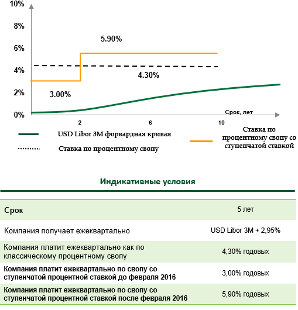

+7 495 500-55-50
Процентные инструменты хеджирования кредитов
С помощью процентных инструментов возможно оптимизировать профиль процентных ставок по краткосрочным и долгосрочным заимствованиям, снизить возникающие риски. ПАО Сбербанк предлагает различные производные инструменты на процентные ставки, как стандартные, так и индивидуальные, в соответствии с уникальным типом риска для каждого клиента. Использование производных инструментов на процентные ставки обеспечивает большую предсказуемость и стабильность расходов по выплате процентов, в том числе в целях синхронизации валюты заимствований с валютой выручки. Большинство инструментов не привязаны к кретитам в ПАО Сбербанк и могут быть использованы для оптимизации кредитов в других банках. Основные риски, с которыми может столкнуться Компания:
Процентный риск
Риск негативного изменения процентных ставок, что ведет к повышению стоимости заимствования
Возможные инструменты:
-
Процентный своп (IRS) – позволяет заменить одни процентные платежи другими, например перейти от фиксированной ставке к плавающей, также позволяет изменить периодичность платежей.
- Возможность снизить процентные выплаты
- Позволяет защититься от роста плавающей ставки
- График платежей может быть полностью синхронизирован с графиком выплат по кредиту
-
Процентный опцион – покупатель опциона процентных ставок страхует себя от понижения или роста процентных ставок. Основные типы опционного страхования (хеджирования) процентных ставок:
Опцион Cap на процентную ставку – «Верхняя процентная граница». Применяется для страхования (хеджирования) кредитов с изменяемой процентной ставкой от роста процентных ставок.
Опцион Floor на процентную ставку - «Нижняя процентная граница». Функционирует на том же принципе, как и приведенная «Верхняя процентная граница», однако, данный инструмент, страхует позиции клиента в случае снижения процентных ставок.
Стратегия процентный Collar определяет коридор, в пределах которого может колебаться процентная ставка.- Риск роста процентной ставки выше определенного уровня полностью исключен
- Инструмент позволяет участвовать в благоприятном снижении ставки до необходимого уровня
- Возможность подобрать верхнюю и нижнюю границу таким образом, чтобы премия по стратегии была нулевой
Комбинированный риск
Риск негативного изменения и валютного курса, и процентных ставок
Возможные инструменты:
-
Валютно-процентный своп (CCS) – позволяет Компании изменить валюту долгового финансирования и тип процентной ставки (например, плавающая ставка в рублях трансформируется в фиксированную ставку в другой валюте).
- Возможность скорректировать дисбаланс существующей валютной структуры активов/пассивов Компании
- При переходе из более слабой валюты в более крепкую валюту (например, из рубля в доллар США) снижается номинальная процентная ставка
- Стоимость «синтетического» валютного финансирования, как правило, ниже по сравнению с альтернативными вариантами привлечения средств в валюте
-
Валютно-процентный своп (CCS) с барьером барьером - позволяет Компании изменить валюту долгового финансирования (например, из USD в RUB) и тип процентной ставки.
- Возможность скорректировать дисбаланс существующей валютной структуры активов/пассивов Компании
- Более привлекательные условия относительно валютно-процентного свопа
-
Бивалютный кредит с барьером – позволяет снизить стоимость долгового финансирования, предоставляя банку право конвертировать валюту кредита при достижении заранее определенного уровня валютного курса.
- Процентная ставка по бивалютному кредиту существенно ниже ставки по классическому кредиту.
- Номинал кредита в базовой и альтернативной валютах, уровни верхних и нижних границ определены заранее
- Риск существенного роста обменного курса ограничен.
Процентный Своп (IRS)
Описание инструмента
Процентный своп - предусматривает обмен процентными платежами между Компанией и Банком, позволяет перевести плавающую ставку по кредиту в фиксированную и наоборот, а также изменить периодичность платежей (например, перевести платежи из квартальных в годовые)
Особенности
- График платежей по свопу может быть полностью синхронизирован с графиком процентных платежей по кредиту
- Процентная ставка определяется в день сделки и не меняется в зависимости от колебаний рынка
Преимущества
- Своп в фиксированную ставку – полная защита от роста ставки
- Ставка, зафиксированная через своп, может быть ниже фиксированной ставки по обычному кредиту
- Рынок рублевых свопов позволяет зафиксировать стоимость заимствований на сроке до 10 лет
Ограничения
- Своп исключает возможность участия в снижении плавающей ставки (действует как фиксированная ставка по кредиту)
Механизм (пример):
В дополнение к кредитной сделке Компания заключает сделку процентный своп с номиналом, равным остатку задолженности, и графиком платежей, соответствующим графику процентных платежей по кредиту. В рамках процентного свопа:
- Компания получает от Сбербанка фиксированную процентную ставку, соответствующую процентной ставке по действующему кредиту.
- Компания платит в пользу Сбербанка плавающую процентную ставку, которая зависит от значения Ключевой ставки ЦБ РФ.


Все данные предоставлены в ознакомительных целях и могут быть изменены, в зависимости от рыночной ситуации
Процентный своп со ступенчатой ставкой
Описание инструмента
Процентный своп со ступенчатой ставкой предусматривает обмен процентными платежами между Компанией и Банком, позволяет перевести плавающую ставку по кредиту в фиксированную ставку с разными уровнями для разных периодов действия
Особенности
- Срок действия свопа делится на несколько периодов, в течение которых действуют разные уровни фиксированной ставки
- График платежей по свопу полностью синхронизируется с графиком процентных платежей по кредиту
- Процентные ставки определяются в день сделки и не меняются в зависимости от колебаний рынка
- Возможно деление срока свопа на любое количество периодов
Преимущества
- Ставки, зафиксированные через своп на ближние периоды, могут быть установлены ниже значений обычной фиксированной ставки
- Своп в фиксированную ставку – полная защита от роста ставки
- Возможность выровнять процентные расходы в соответствии с ожидаемыми доходами Компании / проекта
- Возможность «фиксирования» ставок на сроки короче срока действия кредитов
- Продукт удобен при досрочных погашениях кредита или рефинансировании
Ограничения
- Своп исключает возможность участия в снижении плавающей ставки (действует как фиксированная ставка по кредиту)
Механизм платежей по свопу
Все данные предоставлены в ознакомительных целях и могут быть изменены, в зависимости от рыночной ситуации.
Опцион CAP
Описание инструмента
Опцион Cap позволяет снизить риск роста плавающей процентной ставки выше определенного уровня – верхней границы опциона. В случае, если в дату исполнения опциона плавающая ставка выше установленной границы, Компания получает компенсацию в размере превышения ставки над верхней границей опциона
Особенности
- Покупка опциона Cap предусматривает выплату опционной премии (в % годовых единовременно или равномерно по мере уплаты процентных платежей)
- Премия опциона зависит от верхней границы, текущего значения процентной ставки, волатильности процентных ставок, срока исполнения
Преимущества
- Полная защита от роста ставки выше определенного уровня
- Инструмент позволяет участвовать в снижении плавающей процентной ставки
Ограничения
- Непокрытые расходы в случае, если опцион не исполняется или если выплата по опциону меньше опционной премии. Однако потери ограничены величиной опционной премии
Механизм (пример):
Для снижения риска роста плавающей процентной ставки по кредиту, которая зависит от значения Ключевой ставки ЦБ РФ и может быть выше определенного уровня верхней границы, Компания может заключить с Банком опцион CAP. В дополнение к кредитной сделке Компания заключает сделку Опцион CAP.
В рамках опциона CAP:
- При превышении Ключевой ставки ЦБ РФ уровня верхней границы, по опциону Компания получает от ПАО Сбербанк разницу между текущим значением Ключевой ставки ЦБ РФ и зафиксированным уровнем верхней границы по опциону CAP.
- Компания платит в пользу ПАО Сбербанк фиксированную премию по опциону, которая зависит от значения выбранного уровня верхней границы, текущего значения Ключевой ставки ЦБ РФ, волатильности процентных ставок, срока исполнения. Премия платиться единовременно при заключении сделки или в процентах годовых в течение срока сделки по мере уплаты процентных платежей по кредиту


Все данные предоставлены в ознакомительных целях и могут быть изменены, в зависимости от рыночной ситуации
Опцион CAP с удешевлением
Описание инструмента
Для удешевления стоимости опциона CAP Компания может заключить с Банком опцион CAP с удешевлением, при котором устанавливается ограничение действия опциона CAP на Уровне Возврата (нижний уровень) к Плавающей Ставке.
Преимущества
- Страхование от роста процентной ставки по кредиту, которая зависит от плавающей ставки
- Инструмент позволяет участвовать в снижении плавающей процентной ставки
- Снижение стоимости защиты от роста процентной ставки
Ограничения
- Непокрытые расходы в случае, если опцион не исполняется или если выплата по опциону меньше опционной премии. Однако потери ограничены величиной опционной премии
- Страховка не действует на время, когда плавающая ставка превышает Уровень Возврата
Механизм (пример):
В дополнение к кредитной сделке Компания заключает сделку Опцион CAP с удешевлением.
В рамках опциона CAP с удешевлением:
- При превышении Ключевой ставки ЦБ РФ (далее – КС) Уровня Защиты по опциону Компания получает от Сбербанка разницу между текущим значением КС и зафиксированным Уровнем Защиты по опциону CAP. Страховка не действует в процентные периоды, когда КС превышает Уровень Возврата и возобновляется, как только КС возвращается ниже Уровня Возврата к Плавающей Ставке.
- Компания платит в пользу Сбербанка фиксированную премию по опциону, которая зависит от значения страйка, текущего значения КС, волатильности процентных ставок, срока исполнения. Премия платиться единовременно при заключении сделки или в процентах годовых в течение срока сделки по мере уплаты процентных платежей по кредиту


Все данные предоставлены в ознакомительных целях и могут быть изменены, в зависимости от рыночной ситуации
Опцион CAP&FLOOR
Описание инструмента
Опцион Cap - позволяет снизить риск роста плавающей процентной ставки выше определенного уровня. При одновременной продаже опциона Floor, в комбинации с существующим кредитом, решение позволяет снизить процентную ставку по такому кредиту за счет получаемой Компанией премии по проданным опционам.
Если в соответствующую дату процентного платежа текущее значение плавающей ставки находится ниже Нижнего порога или выше Верхнего порога, в дополнение к процентной ставке Компания уплачивает Банку разницу между текущим значением плавающей ставки и соответствующим порогом.
Особенности
- Покупка опциона Cap и опциона Floor предусматривает выплату опционной премии (в % годовых единовременно или равномерно по мере уплаты процентных платежей)
- Премия опциона зависит от уровня границ (верхнего и нижнего), текущего значения процентной ставки, волатильности процентных ставок, срока исполнения
Преимущества
- Снижение размера процентных платежей за счет получаемой Компанией премии по проданным опционам
Ограничения
- Риск роста стоимости финансирования в случае, если текущее значение плавающей ставки превышает закрепленный уровень верхней границы или ниже уровня нижней границы
- В случае досрочного прекращения сделки (кредит + опционы) у Компании могут возникнуть дополнительные издержки
Механизм (пример):
Для оптимизации уровня процентной ставки по кредиту Компания может продать Банку опционы Cap и Floor на Ключевую ставку ЦБ РФ (далее ─ КС), в дополнение к существующей кредитной сделке. Номинал каждой сделки равен остатку задолженности с учетом графика процентных платежей по кредиту.
Компания осуществляет процентные платежи:
Нижний порог < КС < Верхний порог – по Субсидированной процентной ставке; КС ≥ Верхний порог – по Субсидированной процентной ставке + [Текущее значение КС - Верхний порог]; КС ≤ Нижний порог – по Субсидированной процентной ставке + [Нижний порог - Текущее значение КС].
- Компания получает от Сбербанка фиксированную процентную ставку, соответствующую процентной ставке по действующему кредиту.
- Компания платит в пользу Сбербанка плавающую процентную ставку, которая зависит от значения Ключевой ставки ЦБ РФ.


Все данные предоставлены в ознакомительных целях и могут быть изменены, в зависимости от рыночной ситуации
Валютно-процентный своп (CCS)
Описание инструмента
Валютно-процентный своп позволяет Компании изменить валюту долгового финансирования и тип процентной ставки (например, плавающая ставка в рублях трансформируется в фиксированную ставку в другой валюте).
Особенности
- В день сделки фиксируется номинал в желаемой валюте по текущему курсу и соответствующая процентная ставка. Возможен обмен номиналами (основным долгом)
- В дни процентных платежей по кредиту Компания осуществляет в пользу Банка платежи в новой валюте и получает от Банка платежи в валюте первоначального кредита, равные процентным платежам по кредиту
- В дни погашения основного долга производится обмен номиналами. Компания получает от Банка платеж в первоначальной валюте в размере суммы погашения кредита и платит Банку соответствующую сумму в новой валюте
Преимущества
- Возможность скорректировать дисбаланс существующей валютной структуры активов/пассивов Компании
- При переходе из более слабой валюты в более крепкую валюту (например, из рубля в доллар США) существенно снижается процентная ставка
- Стоимость «синтетического» валютного финансирования, как правило, ниже по сравнению с альтернативными вариантами привлечения средств в валюте
Ограничения
- Возможная валютная переоценка в результате обмена номиналами в дни погашения основного долга: курс, по которому осуществлен расчет номинала свопа в новой валюте, может существенно отличаться от рыночного курса на момент обмена номиналами
Механизм (пример):
В дополнение к кредитной сделке Компания заключает сделку валютно-процентный своп с номиналом, равным остатку задолженности, и графиком платежей, соответствующим графику процентных платежей и основного долга по кредиту.
В рамках валютно-процентного свопа:
- Компания получает от ПАО Сбербанк фиксированную процентную ставку, соответствующую процентной ставке по действующему кредиту и часть основного долга (обмен не обязателен), в соответствии с графиком, в валюте кредита.
- Компания платит в пользу ПАО Сбербанк плавающую процентную ставку и основной долг (обмен не обязателен), в соответствии с графиком по кредиту, в новой валюте.


Все данные предоставлены в ознакомительных целях и могут быть изменены, в зависимости от рыночной ситуации
Валютно-процентный своп (CCS) с барьером
Описание инструмента
Валютно-процентный своп c барьером позволяет Компании изменить валюту долгового финансирования (из USD в RUB) и тип процентной ставки. Данный инструмент предлагает улучшенные условия по сравнению с простым валютно-процентным свопом
Инструмент автоматически прекращает существовать в случае наступления барьерного события.
Особенности
- В день сделки фиксируется номинал в RUB по текущему курсу и соответствующая процентная ставка
- В дни процентных платежей по кредиту Компания осуществляет в пользу Банка платежи в RUB и получает от Банка платежи в USD, равные процентным платежам по кредиту
- В дни погашения основного долга производится обмен номиналами. Компания получает от Банка платеж в USD в размере суммы погашения кредита и платит Банку соответствующую сумму в RUB. Обмен номиналами осуществляется только в том случае, если курс USDRUB в течение срока действия свопа не достигал Барьера
Преимущества
- Возможность скорректировать дисбаланс существующей валютной структуры активов / пассивов Компании – снижение валютных рисков
- Более привлекательные условия по сравнению с простым валютно-процентным свопом
Ограничения
- Возможная валютная переоценка в результате обмена номиналами в дни погашения основного долга: курс, по которому осуществлен расчет номинала свопа в новой валюте, может существенно отличаться от рыночного курса на момент обмена номиналами
Механизм (пример):
В дополнение к кредитной сделке Компания заключает сделку валютно-процентный своп с номиналом, равным остатку задолженности, и графиком платежей, соответствующим графику процентных платежей и основного долга по кредиту.
В рамках валютно-процентного свопа:
- Компания получает от ПАО Сбербанк фиксированную процентную ставку, соответствующую процентной ставке по действующему кредиту и часть основного долга (обмен не обязателен), в соответствии с графиком, в валюте кредита.
- Компания платит в пользу ПАО Сбербанк плавающую процентную ставку и основной долг (обмен не обязателен), в соответствии с графиком по кредиту, в новой валюте.


Все данные предоставлены в ознакомительных целях и могут быть изменены, в зависимости от рыночной ситуации
Бивалютный кредит с барьером
Описание инструмента
Бивалютный кредит с барьером позволяет Компании существенно снизить стоимость долгового финансирования за счет предоставления Банку права конвертировать валюту кредита при достижении заранее определенного уровня обменного курса.
Особенности
- Компания платит по сниженной процентной ставке. Все процентные платежи проводятся в базовой валюте кредита
- Платежи по основному долгу производятся в базовой валюте до тех пор, пока курс USD/RUB не достигнет барьера
- В случае, если курс валюты в течение срока действия кредита достигает барьера, Компания производит все платежи в альтернативной валюте – USD. Номинал и платеж по основному долгу в долларах проводятся по курсу, зафиксированному на момент заключения сделки
Преимущества
- Компания получает компенсацию к выплатам по кредиту
- Барьер может быть выставлен на уровне, которой исторически ни разу не был достигнут
Ограничения
- Кредит конвертируется в доллары по курсу ниже, чем обменный курс в день конвертации
Механизм (пример):


Все данные предоставлены в ознакомительных целях и могут быть изменены, в зависимости от рыночной ситуации